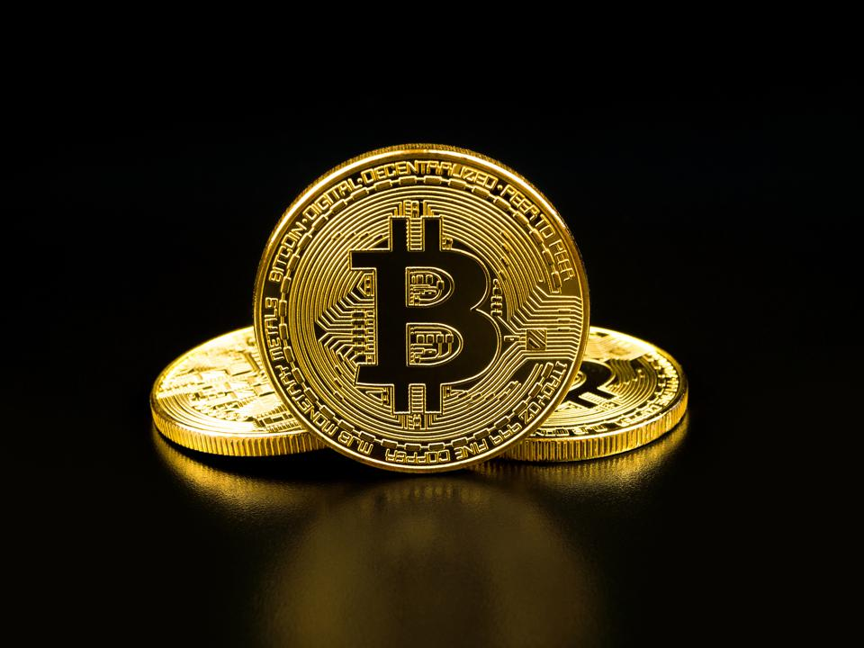
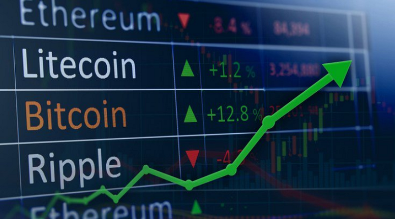

|  | History of Bitcoin | How to buy Bitcoin |  |
Bitcoin (BTC) was worth over 60,000 USD in both February 2021 as well as April 2021 due to events involving Tesla, Paypal and Coinbase, respectively. Tesla’s announcement that it had acquired 1.5 billion U.S. dollars’ worth of the digital coin as well as the IPO of the U.S.’ biggest crypto exchange fueled mass interest. The world’s most well-known cryptocurrency, however, suffered a notable correction in April after speculation on government regulation.
This has been a remarkable performance. But what has really happened with BTC since the last 2015-2017 bull market?, is this a sustainable growth? Let’s dive into the events of the last 2.5 years!
During the previous cycle, BTC left a mark in history of finance. At the beginning, around January 2015, its price was around $200, and only people with interest in the field knew or had any interest on it. But that changed in the coming years. In January 2016, BTC was worth around $432. And in 2017, the year started at $1025, reaching an all-time high of $20,089 by the end of the year, bringing “new blood” to the market. The media was covering BTC’s performance and encouraging everyone to jump in while they can. People from unrelated backgrounds joined the party seduced by the stories of people who invested $100, $200, $5000 in BTC and were suddenly rich, known as the crypto millionaires. But everything that goes up parabolically must come down. BTC began it’s down trend at the beginning of 2018 and bled out down to $3000 by January 2019. People lost their homes, lifesavings, etc. But as experts knew, a new cycle was about to start
By July, BTC’s price was around $12000, bringing new hopes to the market. Those who were able to hold still were finally seeing their investment shine again. And new people were coming in as all the past was forgiven. These rea some of the events that marked the new cycle:
According to many that also triggered bitcoin year’s high of $13,800 on 26th June and the question is, why did that happen if the two are not related and, in fact, one is the negation of the other?
Libra appeared to the world as a stable global cryptocurrency built on a secure network and backed by a reserve of assets that help keep its value stable. The currency shook the bitcoin world in different ways though.
First, Libra is the negation of bitcoin in being overtly and unabashedly centralized. Nodes are controlled by the founding members of the Libra Association with Facebook Mark Zuckenberg on top, therefore one does not even have to wonder how to interpret centralization, whether in a philosophical or a technical way.
Second, there will be no limit in the number of Libra tokens that can be minted or burned. The process will happen automatically, and only in response to demand from authorized Libra resellers, who will purchase tokens for fiat.
Along with the double-spending solution, decentralization and scarcity are the two major breakthroughs brought by Bitcoin. And Libra is denying them both. Yet, it is a “stablecoin” and alongside the volatile bitcoin, the future of stablecoins looks very promising. Not everyone will jump on board of the philosophical, economic and monetary revolution wished by bitcoin maxis therefore digital stable currencies that travel fast and securely across the globe will have a major traction for any consumer.
The impact that the Facebook coin has brought and will bring to the monetary and financial world will be enormous. Most of Facebook’s two billion users were introduced to digital currencies for the first time.
In all honesty, that was the best marketing for bitcoin as finally people globally acknowledged the existence of a possible new way of transacting in a fast and secure way outside of the traditional channels led by the banking system.
The main reason for the downfall of altcoins price and dominance is the effect of 2017 and 2018 cryptocurrency scams that tainted the reputation of the whole market. Multi-million dollar projects that did not see any technical development or plan follow-throughs, ill-intentioned crypto start-ups, failed projects for the lack of funding, these were all part of the problem.
When the top coin hit its year’s high of nearly $14K, its hash rate reached a record-breaking high following a network’s mining difficulty adjustment (a setting that adjusts automatically to keep its blockchain producing a block once every 10 minutes, on average) with an increase of 11%.
But why is it important and how does it affect the price?
Bitcoin hash rate measures the total processing power of the network at any one time. As more miners join the network, the hash rate increases. A strong hash rate is indicative of a secure blockchain and makes it more difficult for bad actors to perform a 51% attack.
This year saw the biggest drop-off in economic output since the Great Depression, the biggest spate of money printing in the Federal Reserve’s 107-year history spurred by a coronavirus pandemic, an epochal shift toward remote working and negative prices for crude oil futures.
Perhaps as important in the pantheon of monetary milestones, 2020 saw the first real signs banks, money managers, insurance firms and companies started to embrace fast-growing markets for cryptocurrencies and digital assets.
At the start of the year, bitcoin was still considered a fringe investment, disparaged by the likes of the billionaire investor Warren Buffett as having “no value.” By the end of the year, however, bitcoin has nearly quadrupled in value, reaching an all-time high above $28,000 and thrusting itself into the centre of conversations among big investors and Wall Street firms.
Some bitcoin proponents saw the success of the cryptocurrency and its underlying blockchain network as validation of a landmark technology that might forever change finance.
This year also saw the third halving that’s happened since the network was launched in 2009, and transpired pretty much the way the first two did. If you (like many) were hoping to see the price of Bitcoin soar, you were sorely disappointed. But then again, that didn’t happen during the first two halvings either. Indeed, the last halving, in July 2016, saw the price of BTC decline from $1,100 to $600, before it took off like a rocket nearly a year later, in May, 2017. That trajectory, by the way, was similar to the first halving, in 2012.
This recovery went on to become one of the most significant rallies in Bitcoin history, as it gradually climbed to over $1,000 by January 2017, to $2,000 by May, $4,000 by August, and $8,000 by November the same year.
Bitcoin eventually recorded its all-time highest value of $20,089 on December 17, 2017—equivalent to gaining 2,916% between the date of the second halving and its maximal price point. This climb from $666 to $20,089 took a total of 17 months.
PayPal has entered the cryptocurrency market, announcing that its customers will be able to buy and sell Bitcoin and other virtual currencies using their PayPal accounts.
Those virtual coins could then be used to buy things from the 26 million sellers which accept PayPal, it said. PayPal plans to roll out buying options in the US over the next few weeks, with the full rollout due early next year.
Bitcoin prices rose alongside the news, breaking the $12,000 mark.
The other cryptocurrencies to be added first will be Ethereum, Litecoin, and Bitcoin Cash (a spin-off from Bitcoin). All could be stored "directly within the PayPal digital wallet", the company said.
As of December 21, 2020, the Company holds an aggregate of approximately 70,470 bitcoins, which were acquired at an aggregate purchase price of approximately $1.125 billion and an average purchase price of approximately $15,964 per bitcoin, inclusive of fees and expenses.
Tesla announced Monday it has bought $1.5 billion worth of bitcoin, and it’s not planning on selling. People will be able to buy Tesla cars with BTC.
There are many predictions with the Bitcoin price in the crypto space but the most popular prediction is Bitcoin price to hit $100K by the end of 2021. Many analysts like Max Keiser, Plan B have predicted the same.
According to a veteran macro investor, Dan Tapiero, 2021 could be a year with massive liquidity hitting the markets. He says,
“ Massive Global Liquidity To Hit Markets NEXT Year. The Chart Suggests The Equity Market At Risk Of A Correction In Q4, Then A Single Greatest Rally Of Our Lifetime In 2021. Enormous Speed And Near-Vertical Price Increase Possible. Might Be Led By Gold This Time, Bitcoin System Would Benefit Too.”